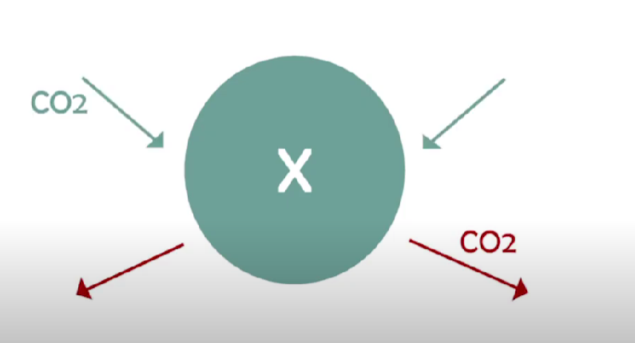
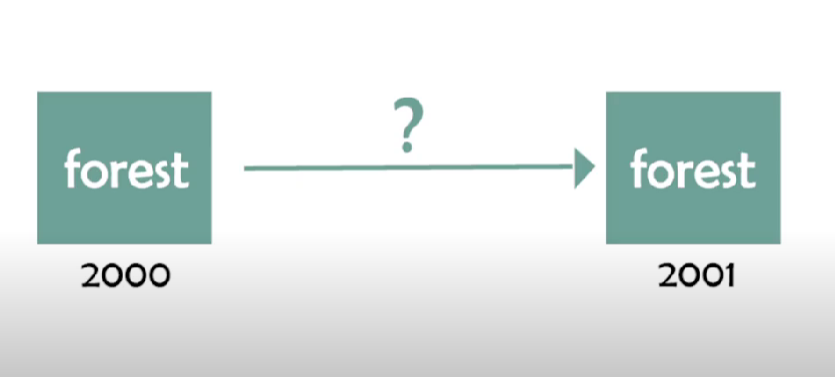
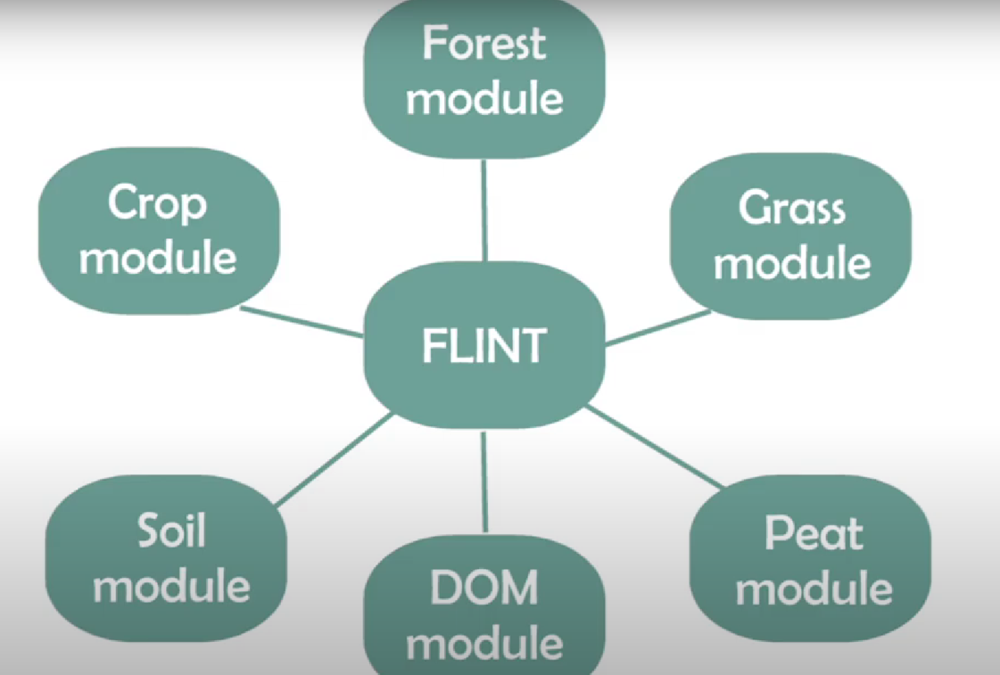
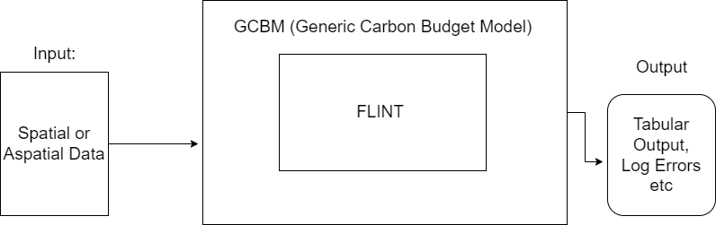
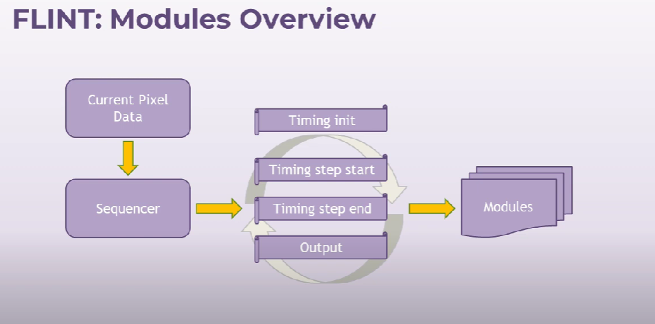

Overview
What is FLINT and its history?
FLINT Stands for Full Lands Integrations tool tool that is basically a advanced MRV that is Monitering, Reporting and Verfication tool that is used to integrate Lands data with other data sources.
How FLINT Works:
FLINT works by using a combination of data sources and data processing tools to provide a unified view of the data. Image a country X and you want to know how much carbon is released or absorbed by the country X.
{kind=link}
FLINT integerates all the data from the country X and provides a unified view of the data. For example collection of map data, of the country X of multiple years, and integerate them to understand the time series of the carbon released or absorbed by the country X. We generally use pixel to determine the data of the country X.
There are many other events happening on the pixel represents by the country X. For example, the land is being irrigated, the land is being harvested, the land is being fertilized, the land is being etc. any kind changes in the land reflectes to the pixel. For example the color of the pixel changes when any kind of change happens on the land.
The Level of CO2 changes due to the above changes in the land. The CO2 is transferred from one pool to another pool.
Refer to this link to understand better about the pool https://docs.moja.global/en/latest/Understanding-FLINT/moja-flint/pools.html
How FLINT determine the growth rate of particular land sector.
Consider the below example of the land sector that is of type of consecutive years.
{kind=link}
In the above picture the forest is grown from pixel 2000 to 2001. FLint use another source of data to depict the growth rate of the forest. The FLINT use module to calculate the growth of the forest. For example FLINT use the growth module to depict the growth from 2000 to 2001. FLINT integrates other souces of data to provide a unified view of the data.
Features of the FLINT(Preserve Mass balance)
Refer to this video https://www.youtube.com/watch?v=xnJqNBIET7A&list=PL_WECUlMWiUmZYoPHNn6RnMSia5Naj5gE&ab_channel=mojaglobal Time Stamp: 4.24
Difference between the CBM-CFS3 and FLINT
TimeStamp: 0.58 https://www.youtube.com/watch?v=3_F4LfSBlN4&list=PL_WECUlMWiUmZYoPHNn6RnMSia5Naj5gE&index=2&ab_channel=mojaglobal
Difficulties faced by the FLINT
Fire Spread, and Rule based disturbances.
What are Models and how they are used in FLINT?
FLINT use models to calculate the how much CO2 needs to move from one pool to another pool. if the models to calcuate the shift of Carbon, We can configure new models to calculate the shift of Carbon (FLINT Example Project)
Models Attached to the FLINT
{kind=link}
How do models operate?
Models use internal operations to perfom the specific operation. For example the growth module use the data of the average rain rate data to calculate the growth rate.
{kind=link}
Models works on the FLINT MRV tool and produce the output according to the operations impelmented in the model.
Different types of Models:
The FLINT includes six standard modules for simulating changes in forest and crop systems, including changes in soil carbon. These modules each run for all simulations at a monthly step interval (see Temporal Distribution) and include:
Empirical forest growth module
Hybrid forest growth module
WOFOST crop growth module
Turnover module
Decomposition module
RothC soil carbon module
FLINT: Modules Overview:
{kind=link}
Note
I have attached the reference of the models in my proposal document that i will use to explaining them.